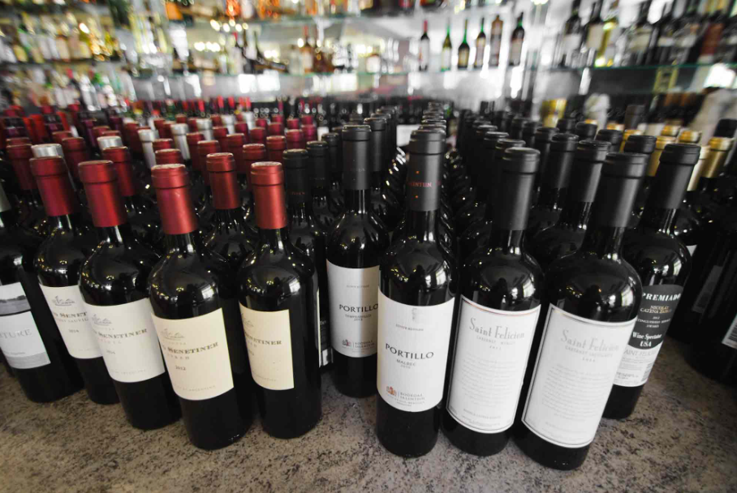

En el año 2010 la Legislatura Porteña le entregó un reconocimiento por ser el restaurante más antiguo de Buenos aires. Su misión es mantener las recetas y platos tradicionales como desde 1860. Entre sus tradicionales platos, encontramos el Puchero mixto a la española, jamón serrano español, la tabla de mariscos o unos calamaretis cocinados al estilo andaluz . Para continuar con un paella a la valenciana o un pulpo español, el bacalao Noruego, la tradicional cazuela de maricos, rabas a la romana, chupín de pescado y culminar con postres tradicionales, como la natilla, tiramisú o el arroz con leche servido en copa. Su extensa cava, está conformada por los mejores vinos de bodegas tradicionales de la Argentina. El restaurante ha recibido galardones de todas partes del mundo, como los trofeos «America 86» y el «International Award For de Good Service.» Los clientes, amigos fieles a la casa, familias tradicionales que por generaciones mantienen su confianza. Son los mismos que sentaron a sus hijos en las mesas del restaurante, hoy continúan haciéndolo con sus nietos.
